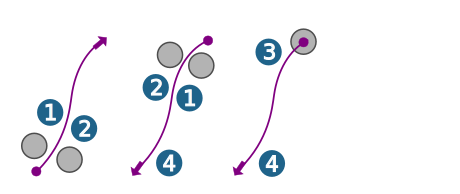
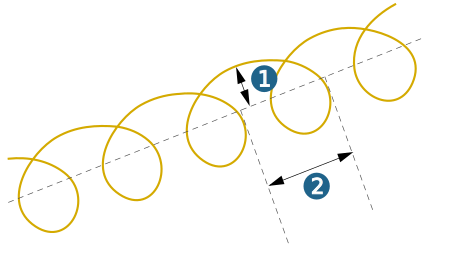

Parameters
Tool position
Left (1), Right (2): The cutter moves beside the contour. The center path of the cutter is output.
On contour (3): The cutter moves directly on the contour.
The right selection of the cutter position depends on the direction of the polyline (4).
|  |
Auto: The Auto option is enabled by default for the Left and Right tool positions. The contour direction is set automatically, depending on the model geometry to be milled. There is no need to reverse the contour manually. Prerequisite: The Check model option must be enabled.
Allowance
Z offset contour: The tool tip or the tool reference point remains this amount away from the selected contour.
Note
Please note: A negative value for Z offset contour is permitted, but in contrast to the 5X Free Path Machining cycle, the tool mustnot violate the model surface.
Example: (1) Selected contour, (2-4) Generated toolpath, (2) Axial offset = 2, (3) Axial offset = 0, (4) Axial offset = -2

Stock allowance XY: Remaining stock allowance in the X and Y direction for machining to the right or left of the contour.
Ramp-shaped vertical stepdown: Ramp-shaped vertical stepdown takes place between two planes.
Trochoids
Trochoidal stepover: Trochoidal stepover (in loops) takes place along the selected contour, which serves as a center point path.
Trochoidal radius (1): Infeed for each loop movement to the left/right from the selected contour.
Trochoidal step (2): Infeed for each loop movement in the direction of the selected contour.
If this option is selected, the cutting and tensile forces on the tool are less than with direct stepdown.
|  |
Infeed
Machining depth: Machining depth of the contour.
Stepdown: Specifies the number of machining passes. Z infeed to the next machining pass. The value of the last infeed is automatically adjusted to the machining depth and the stock allowance in Z.
Retract mode
The retract mode defines the Z level where the system executes horizontal infeed movements. The mode set is valid for all machining directions (incl. approach, retract and return movement macros) and for the profiles machined with them. Exception: Machining in zigzag mode without return macro.
Clearance distance (1): all retract and infeed movements are executed via the clearance distance. Starting and end positions of an infeed movement in rapid are displaced in Z direction in order to guarantee a collision-free linear infeed movement. The clearance distance is added to these positions.
Clearance plane (2): all retract and infeed movements are executed via the clearance plane.
 |
Safety
Clearance plane and clearance distance apply in the direction of the Z axis of the current frame.
 |
Clearance plane (1): Plane for rapid tool movements. Specification in absolute dimensions Define the clearance plane by right-clicking on the icon. Select a point and confirm the selection. |
Warning
Traversing movements on the clearance plane are not checked with regard to collisions. Therefore, this plane must be placed at a sufficient distance above the surface of the workpiece.
Clearance distance (2): Distance to the current toolpath to be milled. Above the clearance distance, infeed takes place as rapid in the Z direction (A); below the clearance distance infeed takes place at the Z feedrate (B).
(3) Top, (4) Bottom
 |